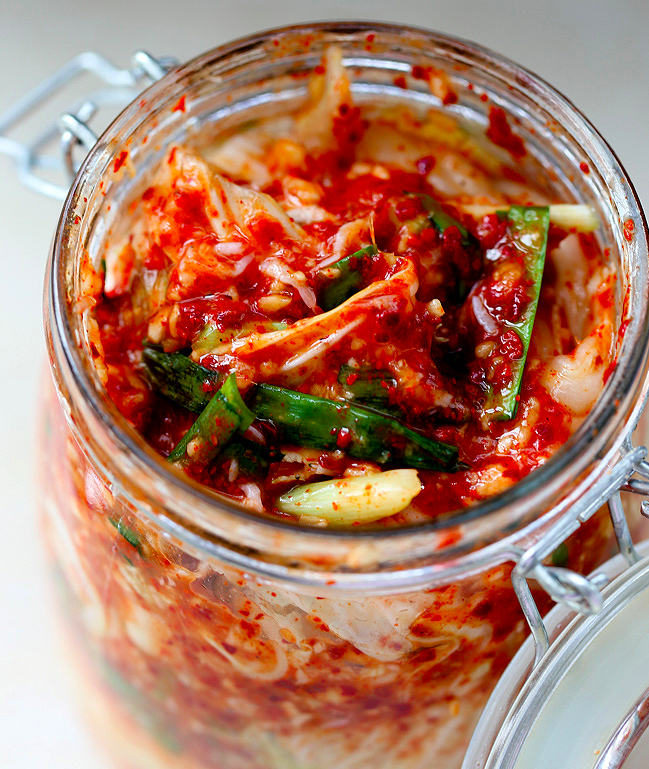

김치 Kimchi
September 12th, 2017
Easy nappa Kimchi recipe. Time to try some real Korean food!

Prep Time |
Total Time |
30 min |
90 min |
Ingredients
- 5kg napa cabbage
- 300g salt
- 260g water
- 65g flour
- 55g sugar
- 200g fish sauce
- 2.5 cups hot pepper flakes (more or less depending on your taste)
- 150g garlic
- 165g onions
- 5g ginger
- Greens onions, sliced into one-inch pieces
- Carrots
Directions
- Trim the discolored outer leaves of 5 kilograms of napa cabbage.
- Cut the cabbage lengthwise into quarters and remove the cores. Chop it up into bite-size pieces.
- Rince the pieces of cabbage in cold water, drain, place into a large basin, sprinkle with salt, and mix together.
- Every 30 minutes, turn the cabbage over.
- After 1½ hours (two turns), rinse the cabbage in cold water 3 times to clean it thoroughly.
- Drain the cabbage and set aside.
Make porridge
- Put 3 cups of water and ½ cup sweet rice flour (chapssal garu) in a pot, mix well, and bring to a boil.
- Keep stirring until the porridge makes bubbles (about 5 minutes).
- Add ¼ cup sugar. Stir and cook for a few more minutes until it’s translucent.
- Remove from heat and let it cool.
Make kimchi paste
- Place the cold porridge into a large bowl. Now you will add all your ingredients one by one.
- Add fish sauce, hot pepper flakes, garlic, ginger, and onion to a food processer and blend until smooth.
- Add green onions and carrots.
- Mix all ingredients together well.
Action! Mix the cabbage with the kimchi paste!
- Put the kimchi paste in a large basin and add all the cabbage. Mix it by hand.
- Put the kimchi into an air-tight sealed plastic container or glass jar.
- You can eat it fresh right after making or wait until it’s fermented.
- To ferment, leave it cracked at room temperature for 1-2 days and then leave it sealed in the fridge for about one week.